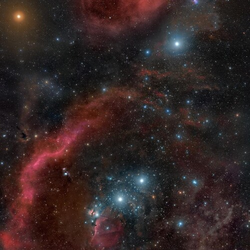

Flowers Of Earth: We set off to meet the others at Betelgeuse.

Flowers Of Earth: We set off to meet the others at Betelgeuse.
We have traveled to watch Alpha Orionis undergo Supernova,
and to say Hello, to everybody else, who had the same idea.
We have been studying it even before we became space faring species,
we as in all the species that grew up seeing it with their own eyes.
We're all humanoid here,
carbon based, mostly the same DNA.
We've been talking about the Flowers on Earth,
the Poets, and Libraries; Interesting Books.
Earth has become a Nature Preserve,
well, it has always been a nature preserve,
hence the quiet skies.
Early humans had a lot of problems,
and they needed a lot of help.
The oldest of us date back to the first days of the pandemics,
it was a very strange time.
All planets eventually,
emerge dangerous pathogens.
If there is intelligent life, and if it approaches unsustainable,
some form of Contact is made.
In our case, people just stopped aging,
90 year olds reverted back to their 40s.
We got really smart, it took a few decades to piece it all together,
and then we set off to meet the others at Betelgeuse.
And here here we are,
The Final Frontier, to quote Roddenberry.
It is not a good idea to go Planet Side,
precisely because of pathogens.
Once we leave our solar systems,
we all keep to the Stars.
Time travel is available to us,
the space is infinite, in all dimensions.
The worst thing that happened in the universe were Unlucky species dying alone,
we are now in the process of cataloging everybody by moving through the ancient past.
We are all moving towards where it all begun, Methuselah Prime,
the ancient source of all DNA based life.
It will take an Eternity,
but we'll get there.
First Officer's Log,
Alpha Orionis, October 8th, Earthdate 102020.